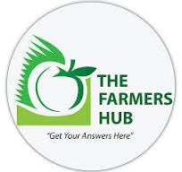

Farmers' Hub - About Us
We are a passionate group of agricultural professionals dedicated to empowering farmers with knowledge and resources to achieve sustainable success.
Our mission is to bridge the gap between traditional farming practices and innovative technologies. We believe that by equipping farmers with the right tools and knowledge, we can create a more profitable and environmentally responsible agricultural sector.
Our Team
Our team consists of experienced agronomists, agricultural economists, and technology specialists who share a deep commitment to sustainable agriculture.
Dr. Jane Doe
Chief Agronomist - Jane brings over 20 years of experience in soil science and crop production.
John Smith
Agricultural Economist - John specializes in farm management and helps farmers optimize their resources.
Alice Green
Technology Specialist - Alice keeps us updated on the latest advancements in precision agriculture and helps farmers adopt new technologies.
We are constantly expanding our team and network to bring you the most comprehensive and up-to-date information on sustainable farming practices.